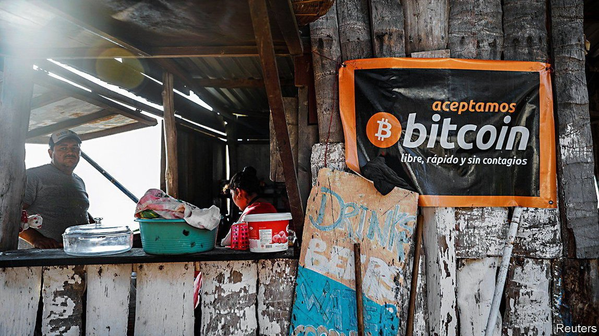

2021-09-07T14:07:04+00:00
Satoshis for cervezas
碎币几两换酒
碎幣幾兩換酒
Using bitcoin as legal tender
把比特币用作法定货币
把比特幣用作法定貨幣
Is El Salvador’s move a costly gimmick or an attempt to lower transaction fees?
萨尔瓦多此举是不惜代价搞噱头还是要降低交易费用？
薩爾瓦多此舉是不惜代價搞噱頭還是要降低交易費用？

WHEN ASKED if anyone has tried to use bitcoin to pay her, a woman selling coffee and pastries in San Salvador, the capital city of El Salvador, replies “thank God, no”, and rebuffs an attempt to do so. A man selling soup for lunch brushes off the idea with laughter. By dinnertime, low on phone battery and morale, your correspondent is pointed to a bar called Leyendas where the logo for Strike, a digital bitcoin wallet, adorns the walls. But the attempt to pay with bitcoin is met with confusion. The bar’s owner, who controls the wallet, is missing. A few frantic texts later he sends his wallet address. At last, 26,618 Satoshis (one hundred millionth of a bitcoin), $12.50-worth, are swapped for beers.
在萨尔瓦多首都圣萨尔瓦多，当被问到是否有顾客尝试用比特币付款时，一位卖咖啡和糕点的女士回答，“谢天谢地，没有”，并断然拒绝了笔者想用比特币付款的请求。另一位卖午餐配汤的男子对这个问题一笑置之，不予理睬。到了晚餐时间，手机电量和情绪都已很低落的笔者经人指点来到一家名为Leyendas的酒吧，里面的墙上贴着比特币钱包Strike的标识。但当笔者尝试用比特币付款时，店员显得不知所措。持有这种数字钱包的酒吧老板这会儿人不在店里。一通手忙脚乱的短讯来回后，他终于发来了自己的数字钱包地址。最后，相当于12.5美元的26,618聪（Satoshi，即百万分之一个比特币）被收下，笔者买到了啤酒。
在薩爾瓦多首都聖薩爾瓦多，當被問到是否有顧客嘗試用比特幣付款時，一位賣咖啡和糕點的女士回答，“謝天謝地，沒有”，並斷然拒絕了筆者想用比特幣付款的請求。另一位賣午餐配湯的男子對這個問題一笑置之，不予理睬。到了晚餐時間，手機電量和情緒都已很低落的筆者經人指點來到一家名為Leyendas的酒吧，裡面的牆上貼着比特幣錢包Strike的標識。但當筆者嘗試用比特幣付款時，店員顯得不知所措。持有這種數字錢包的酒吧老闆這會兒人不在店裡。一通手忙腳亂的短訊來回後，他終於發來了自己的數字錢包地址。最後，相當於12.5美元的26,618聰（Satoshi，即百萬分之一個比特幣）被收下，筆者買到了啤酒。
On September 7th bitcoin will become legal tender in El Salvador, alongside the dollar. The Central American country of 6.5m people is the first to attempt such a feat. A week before the big day those who had put plans in place to use bitcoin were the exception, rather than the norm. Three-quarters of Salvadoreans surveyed in July by Disruptiva, a polling firm, were sceptical of the plan to adopt bitcoin. Two-thirds were not willing to be paid in it and just under half knew nothing about it. Both the World Bank and the IMF have warned against adoption, citing the potential impact on macroeconomic stability and bitcoin’s environmental costs.
9月7日，比特币将在萨尔瓦多成为与美元并列的法定货币。这个拥有650万人口的中美洲国家成为了全球第一个吃螃蟹者。但在这个大日子来临的前一周，已经准备好接受使用比特币的仍只是少数人而远非常态。7月，在接受民调公司Disruptiva调查的萨尔瓦多人中，有四分之三对采用比特币的计划持怀疑态度。三分之二表示不愿接受比特币支付，而将近一半人对这种数字货币一无所知。世界银行和国际货币基金组织都已就采用比特币为法定货币发出警告，指出宏观经济稳定可能受到冲击以及比特币破坏环境。
9月7日，比特幣將在薩爾瓦多成為與美元並列的法定貨幣。這個擁有650萬人口的中美洲國家成為了全球第一個吃螃蟹者。但在這個大日子來臨的前一周，已經準備好接受使用比特幣的仍只是少數人而遠非常態。7月，在接受民調公司Disruptiva調查的薩爾瓦多人中，有四分之三對採用比特幣的計劃持懷疑態度。三分之二表示不願接受比特幣支付，而將近一半人對這種數字貨幣一無所知。世界銀行和國際貨幣基金組織都已就採用比特幣為法定貨幣發出警告，指出宏觀經濟穩定可能受到衝擊以及比特幣破壞環境。
Legal tender is ordinarily defined as the money that courts of law must accept to settle debts. But El Salvador’s bitcoin law goes further, saying that businesses must accept the cryptocurrency as payment for goods or services. It has also come into effect very quickly. Nayib Bukele, the country’s president, who controls a large majority in the legislative assembly, announced his plan to make bitcoin legal tender at a cryptocurrency conference on June 5th. The law was approved just three days later.
法定货币通常被定义为法院必须认可用于结算债务的货币。但萨尔瓦多有关比特币的法律更进一步，指明商家必须接受顾客以这种加密货币购买商品或服务。这项法律的实施也异常迅速。控制萨尔瓦多国会大多数议席的总统纳伊布·布克尔（Nayib Bukele）在6月5日召开的一个加密货币会议上宣布计划采用比特币为法定货币。相关法律三天后便在国会通过。
法定貨幣通常被定義為法院必須認可用於結算債務的貨幣。但薩爾瓦多有關比特幣的法律更進一步，指明商家必須接受顧客以這種加密貨幣購買商品或服務。這項法律的實施也異常迅速。控制薩爾瓦多國會大多數議席的總統納伊布·布克爾（Nayib Bukele）在6月5日召開的一個加密貨幣會議上宣布計劃採用比特幣為法定貨幣。相關法律三天後便在國會通過。
Sceptics have posited that the move is just a stunt: a sop to Ibrajim and Yusef Bukele, the president’s brothers, who are crypto-enthusiasts. But the president claims the move will help El Salvador win foreign investment and reduce the cost of remittances. He may not be entirely wrong. The gambit might lure in deep-pocketed crypto-investors (though it may deter more conventional ones). And its experience may provide a case study in whether one of the long-touted benefits of bitcoin works for regular people. A diaspora of some 2m Salvadoreans sends remittances worth 20% of GDP home each year. But cross-border bank and wire transfers are slow and expensive. Wallet-to-wallet bitcoin transfers are quick and free.
质疑人士认为此举只是个噱头：用以讨好总统那两位热衷加密货币的兄弟伊布拉希姆·布克尔（Ibrajim Bukele）和尤塞夫·布克尔（Yusef Bukele）。但总统声称此举将帮助萨尔瓦多吸引外国投资并降低汇款成本。这也许不完全是空想。这样抢占先机可能吸引到财力雄厚的加密货币投资者（尽管也可能让更多的传统投资者却步）。其中的经验可能成为案例，供人们研究比特币一直被吹捧的优点之一是否对普通人也成立。每年约有200万萨尔瓦多侨民向国内汇款，总值占该国GDP的20%，但跨境银行转账和电汇的速度慢、费用高。比特币钱包点对点转账不但快捷而且免费。
質疑人士認為此舉只是個噱頭：用以討好總統那兩位熱衷加密貨幣的兄弟伊布拉希姆·布克爾（Ibrajim Bukele）和尤塞夫·布克爾（Yusef Bukele）。但總統聲稱此舉將幫助薩爾瓦多吸引外國投資並降低匯款成本。這也許不完全是空想。這樣搶佔先機可能吸引到財力雄厚的加密貨幣投資者（儘管也可能讓更多的傳統投資者卻步）。其中的經驗可能成為案例，供人們研究比特幣一直被吹捧的優點之一是否對普通人也成立。每年約有200萬薩爾瓦多僑民向國內匯款，總值占該國GDP的20%，但跨境銀行轉賬和電匯的速度慢、費用高。比特幣錢包點對點轉賬不但快捷而且免費。
The attempt will probably reveal bitcoin’s limitations, too. Many locals understandably fear its volatility, which makes it ill-suited for payments and debt. Those accepting it, like Leyendas, do not quote prices in it, but convert from dollars at the point of sale. And there can be unexpected fees, which might stymie its use. There are 200 bitcoin cash machines being installed across the country to enable cash dollars to be converted into bitcoin in digital wallets. The one used by The Economist took a 5% fee. “I am not going to use it,” says Irma Gómez, who runs a diner near one such ATM in Santa Tecla, a town just outside San Salvador. But she is also intrigued. “Let the people try it.” ■
这种尝试大概也会暴露比特币的局限性。许多当地人担心比特币的波动性使其不适合用作支付和债务偿付手段，这是可以理解的。接受比特币的商家，比如Leyendas酒吧，并不以比特币报价，而是在收款时按美元价格换算成比特币。而且使用比特币也可能产生意想不到的费用，阻碍其普及。萨尔瓦多全国各地正在安装200台比特币自动提款机，以便把美元换成数字钱包中的比特币。笔者使用的那台机器收取了5%的手续费。在圣萨尔瓦多郊外的圣塔克拉镇（Santa Tecla），伊尔玛·戈麦斯（Irma Gómez）经营的餐馆旁边就有一台这样的机器。“我不打算用这玩意儿。”她说。但她也不无好奇，“让大家试试看吧。”
這種嘗試大概也會暴露比特幣的局限性。許多當地人擔心比特幣的波動性使其不適合用作支付和債務償付手段，這是可以理解的。接受比特幣的商家，比如Leyendas酒吧，並不以比特幣報價，而是在收款時按美元價格換算成比特幣。而且使用比特幣也可能產生意想不到的費用，阻礙其普及。薩爾瓦多全國各地正在安裝200台比特幣自動提款機，以便把美元換成數字錢包中的比特幣。筆者使用的那台機器收取了5%的手續費。在聖薩爾瓦多郊外的聖塔克拉鎮（Santa Tecla），伊爾瑪·戈麥斯（Irma Gómez）經營的餐館旁邊就有一台這樣的機器。“我不打算用這玩意兒。”她說。但她也不無好奇，“讓大家試試看吧。”